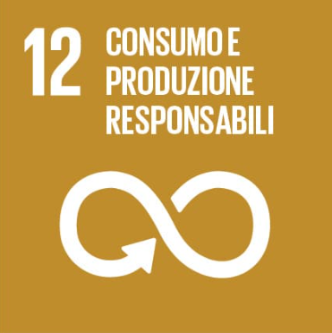
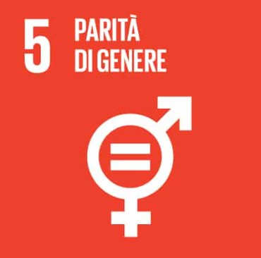
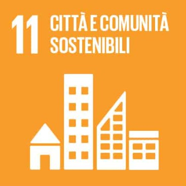

OpenEyes contribuisce a diversi Obiettivi di Sviluppo Sostenibile, con particolare attenzione ai Goal 12, 5 e 11.
Garantire modelli sostenibili di produzione e di consumo 2.5 Entro il 2030, ridurre in modo sostanziale la produzione di rifiuti attraverso la prevenzione, la riduzione, il riciclaggio e il riutilizzo 12.b Sviluppare e applicare strumenti per monitorare gli impatti di sviluppo sostenibile per il turismo sostenibile, che crei posti di lavoro e promuova la cultura e i prodotti locali

Raggiungere l'uguaglianza di genere e l'empowerment (maggiore forza, autostima e consapevolezza) di tutte le donne e le ragazze 5.1 Porre fine a ogni forma di discriminazione nei confronti di tutte le donne, bambine e ragazze in ogni parte del mondo 5.2 Eliminare ogni forma di violenza contro tutte le donne, bambine e ragazze nella sfera pubblica e privata, incluso il traffico a fini di prostituzione, lo sfruttamento sessuale e altri tipi di sfruttamento 5.b Migliorare l'uso della tecnologia che può aiutare il lavoro delle donne, in particolare la tecnologia dell'informazione e della comunicazione, per promuovere l'empowerment, ossia la forza, l'autostima, la consapevolezza delle donne

Rendere le città e gli insediamenti umani inclusivi, sicuri, duraturi e sostenibili 11.7 Entro il 2030, fornire l'accesso universale a spazi verdi pubblici sicuri, inclusivi e accessibili, in particolare per le donne e i bambini, gli anziani e le persone con disabilità 11.3 Entro il 2030, aumentare l’urbanizzazione inclusiva e sostenibile e la capacità di pianificazione e gestione partecipata e integrata dell’insediamento umano in tutti i paesi 11.b Entro il 2020, aumentare notevolmente il numero di città e di insediamenti umani che adottino e attuino politiche e piani integrati verso l'inclusione, l'efficienza delle risorse, la mitigazione e l'adattamento ai cambiamenti climatici, la resilienza ai disastri, lo sviluppo e l’implementazione, in linea con il “Quadro di Sendai per la Riduzione del Rischio di Disastri 2015-2030”[1], la gestione complessiva del rischio di catastrofe a tutti i livelli
